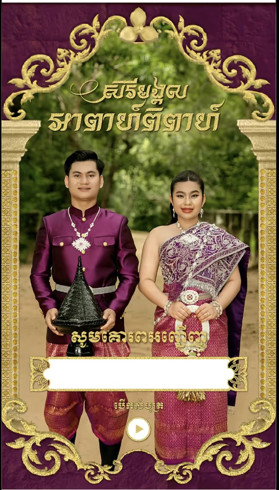
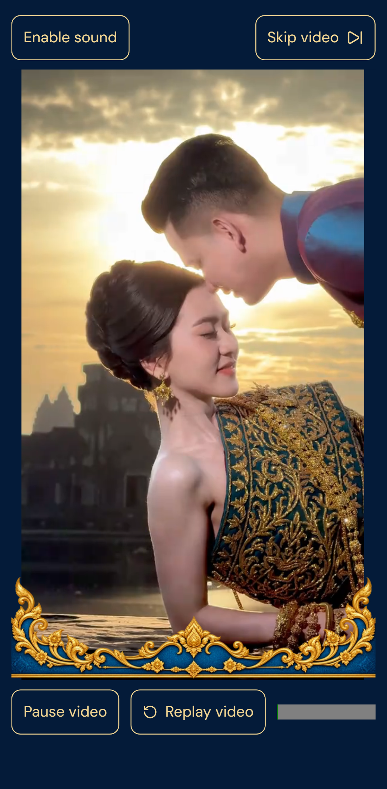
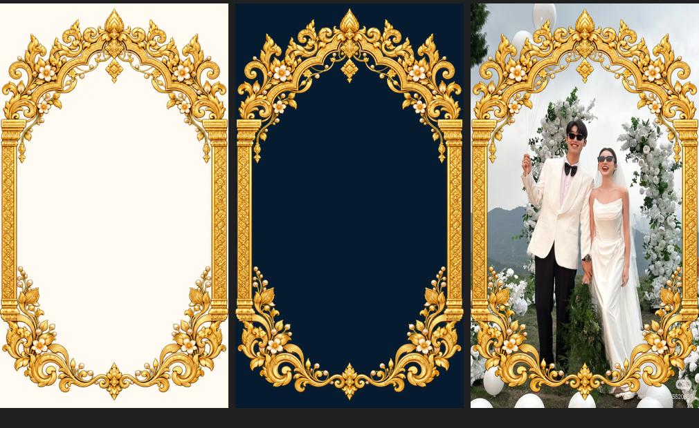
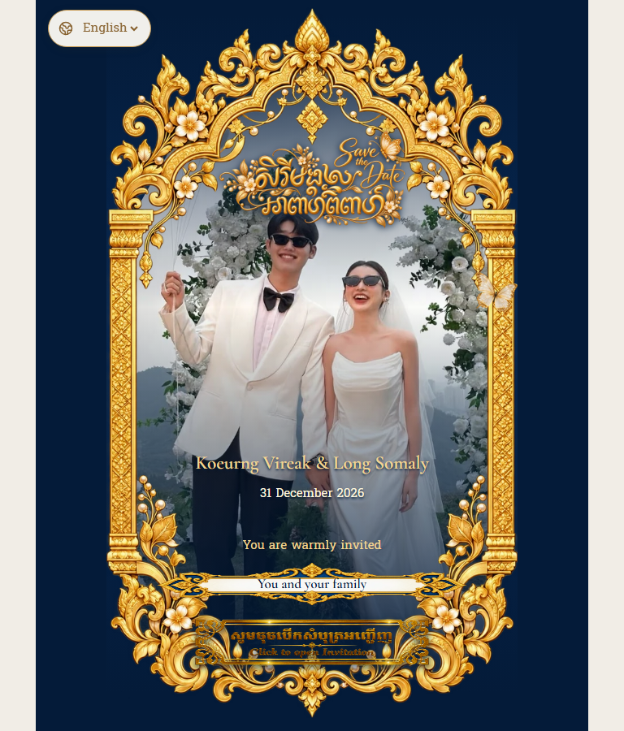
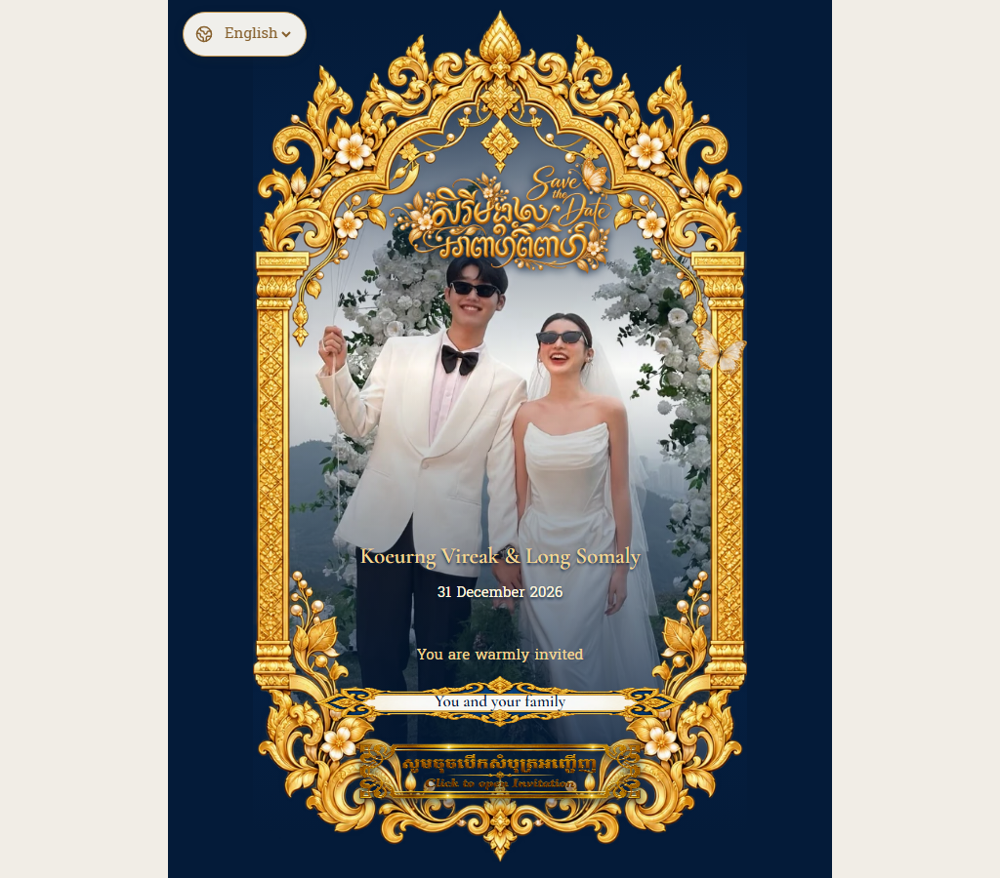
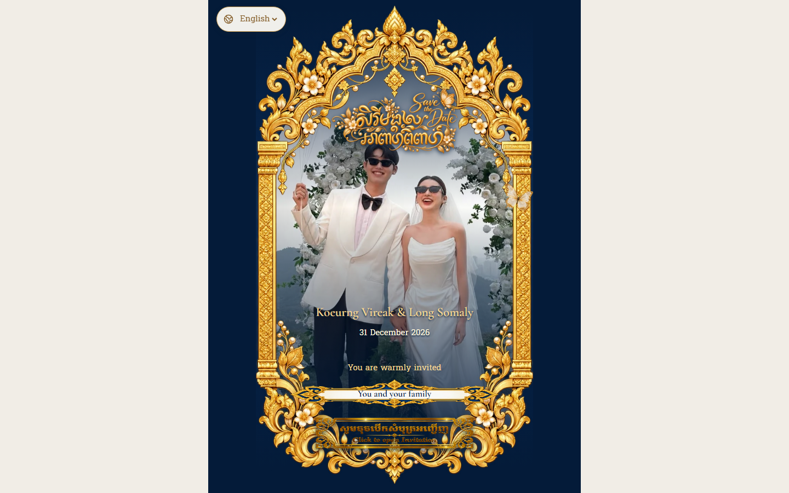
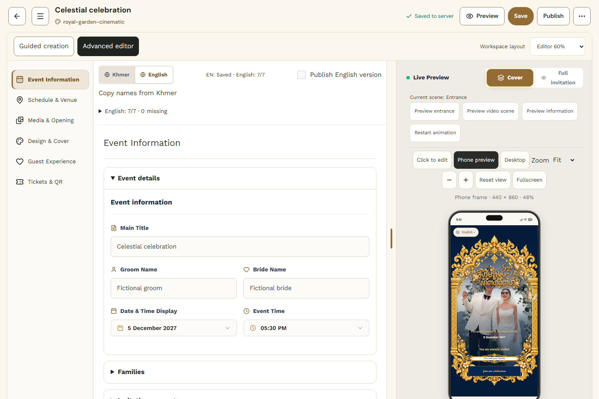

A photographic entrance, an inline film and a stationary ornamental information field. Click an image to inspect it at its captured size. These are composition comparisons; the supplied blue/gold assets deliberately differ from the plum reference.
Engineering reports · Actual QA · Remaining release gates



Generated cutout compared with three surfaces before production resizing. Untouched user sources are retained separately from web derivatives.




Snapshots finish finite visual animations; playback and transitions are tested independently. Physical-device and native Safari protected-media acceptance remain open.